Automatizzare le medie con i dati Argo
Le API non sono mai state attivate. Il collegamento al login non equivaleva a una sincronizzazione.
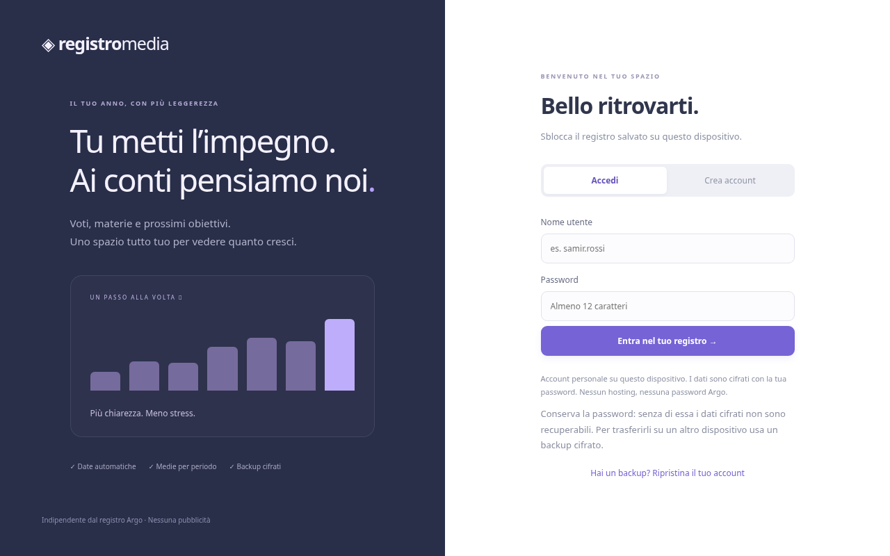
RegistroMedia 0.3: più strumenti
Il registro personale comprendeva agenda, obiettivi e simulatore. Una gamma più ampia, con maggiore densità dell’interfaccia.
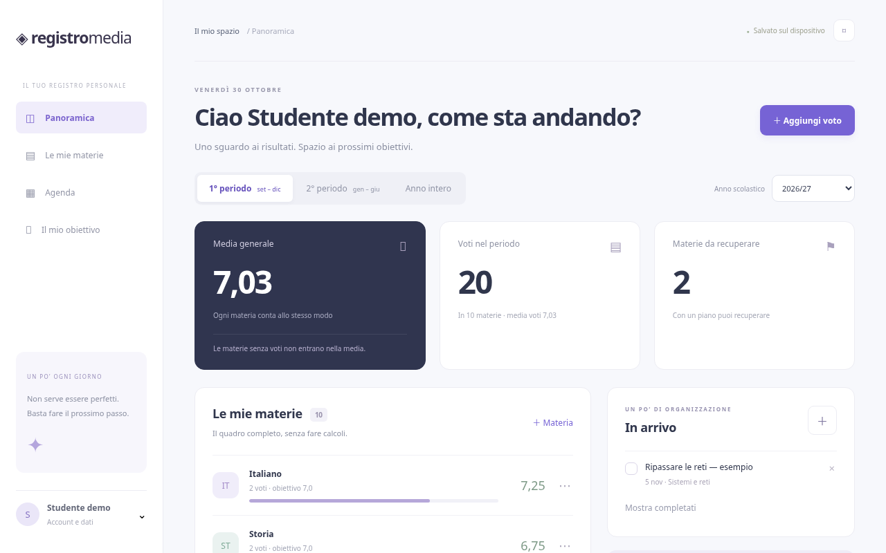
RegistroMedia 0.4: due schede e temi
La schermata si semplifica. Agenda e simulatore diventano strumenti secondari.
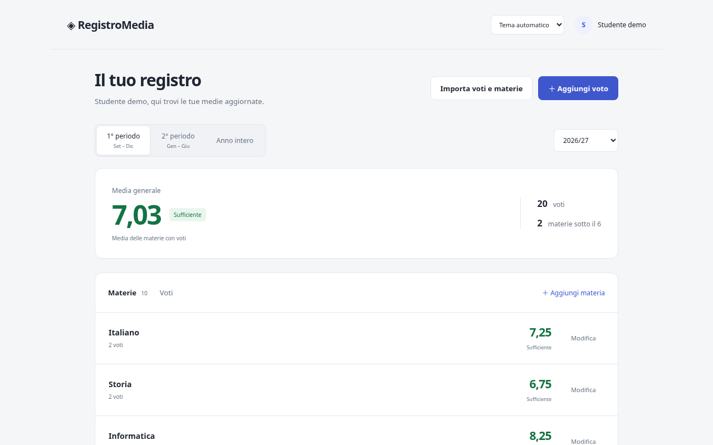
Importazione locale da screenshot
L’OCR prevedeva revisione e conferma. Aiutava con i voti storici, ma aggiungeva peso e complessità.
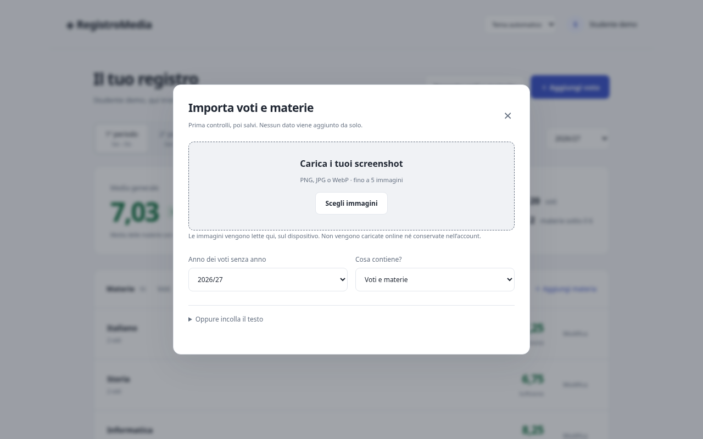
Votiva 1.0.1: un compito più chiaro
Rimossi Argo, OCR, agenda e simulatore. Restano voti, medie e strumenti direttamente collegati.
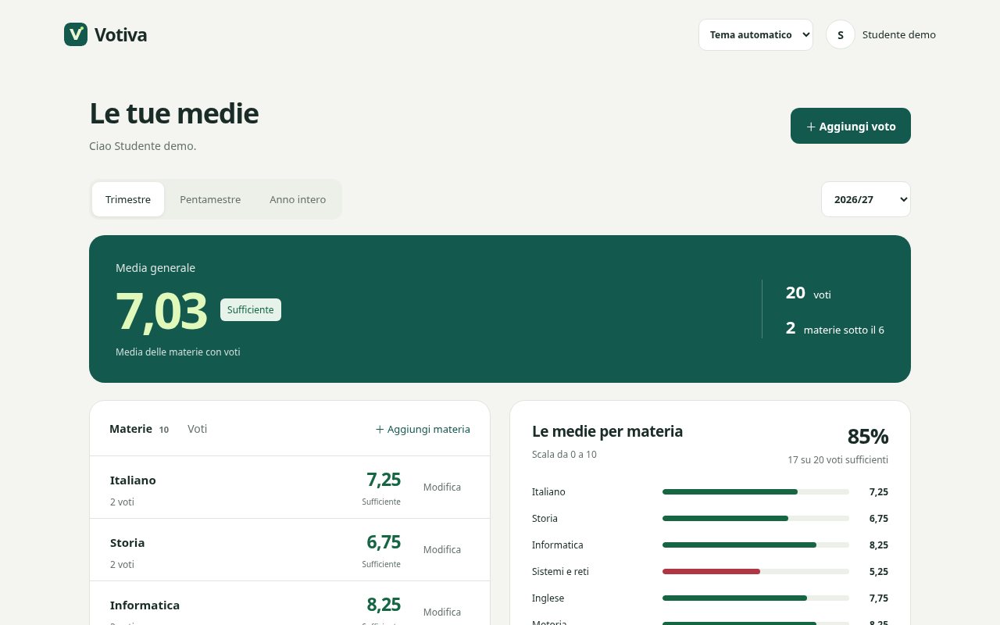
Voti ogni 0,25
Da 0,25 a 10. Tipo, peso, data e nota restano modificabili.
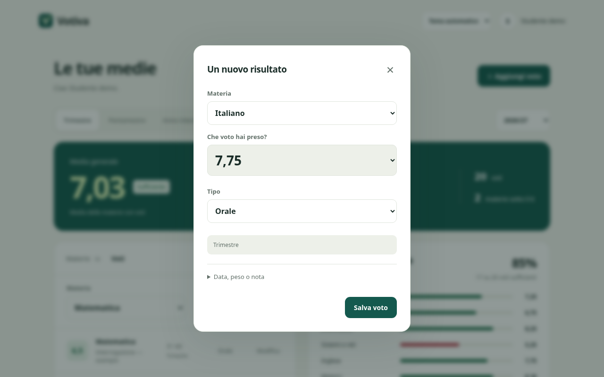
Tutti i voti della materia
Tocca il nome di una materia, filtra il periodo e modifica i risultati.
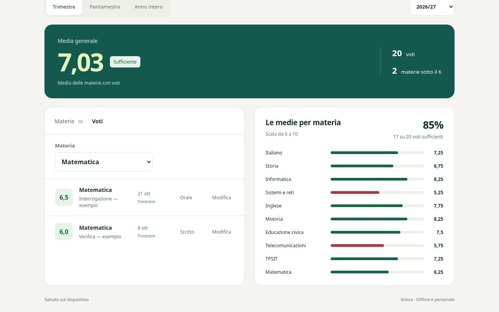
Confini personalizzabili
Trimestre e pentamestre si adattano al profilo. Le impostazioni si ripetono ogni anno.
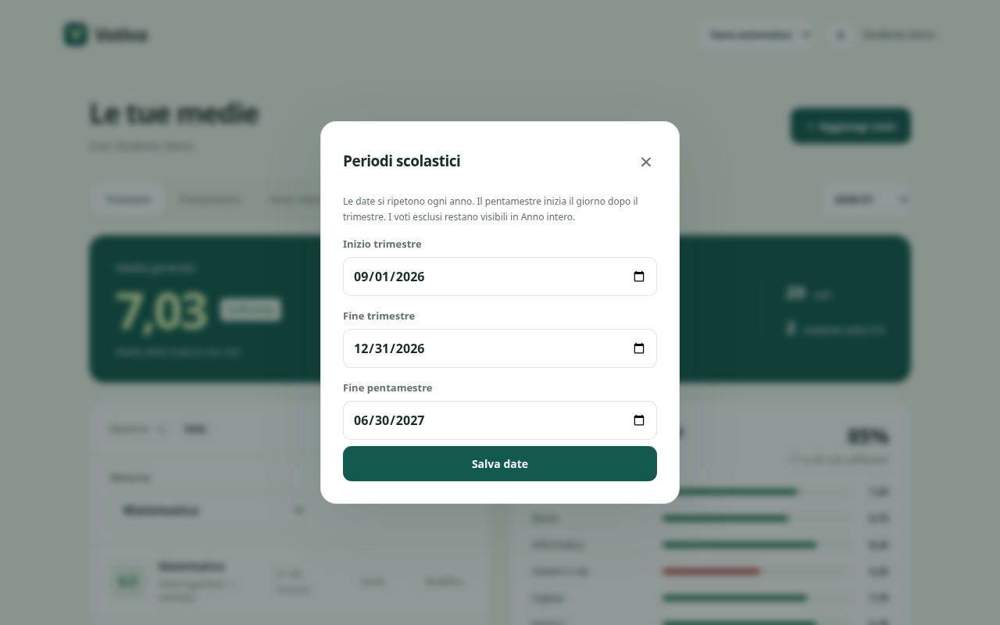
Chiaro, scuro e layout responsive
Otto larghezze controllate automaticamente. Le viste mobile e tablet sono simulate nel browser.
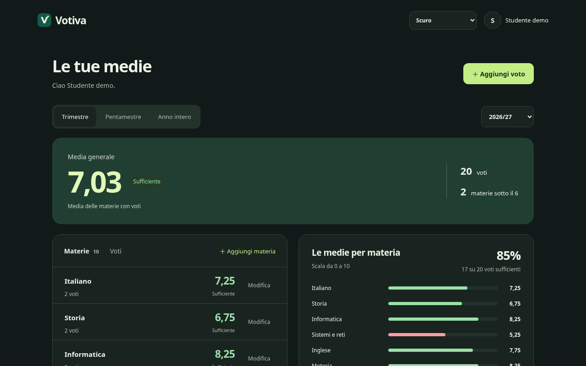
Una vista adatta al telefono
Su iPhone occorre il sito HTTPS pubblicato, poi Safari → Condividi → Aggiungi alla schermata Home.
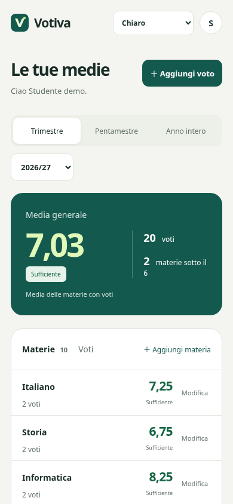
Più leggera, meno automatizzata
APK: 15,6 → 3,04 MB (circa −80,5%). Si perde l’OCR e si inseriscono i voti a mano. Nessuna misura di velocità attribuita.
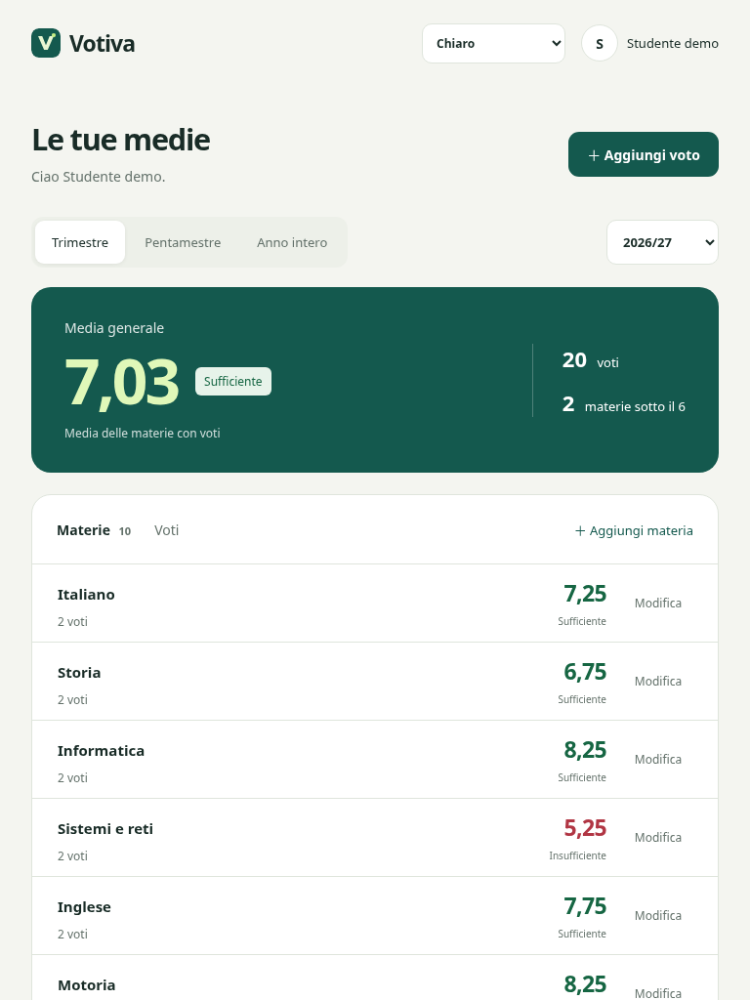
Un progresso con limiti dichiarati
Build e test automatici riusciti. Collaudo fisico, Pages e firme di produzione restano da completare.